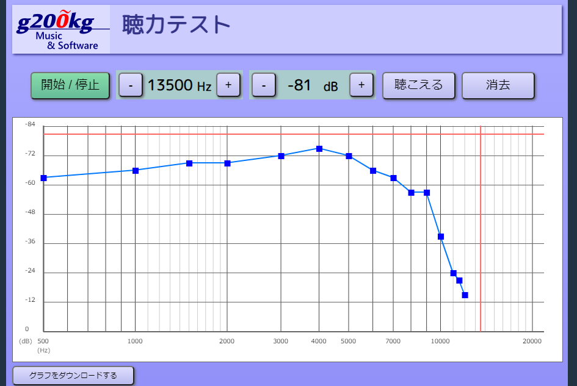

聴力テスト
500
Hz
-20
dB
説明
これは聴覚の周波数特性を確認するためのページです。
ソースはこちら : GitHub https://github.com/g200kg/auditory-test使い方
[開始 / 停止] ボタンを押すと音が鳴ります。もう一度押すとと止まります。
音はサイン波で周波数と音量はそれぞれグラフ上のドラッグ、または数値の隣の[-] / [+] ボタンで操作できます。
周波数は 500Hz 刻み、音量は 3dB 刻みになります。周波数はグラフ上で右に行くほど高く、音量は下に行くほど大きくなります。
これで各周波数で、音量が小さくなって聴こえなくなる直前、ぎりぎり聴こえる限界の点を探してください。聴こえる限界の音量を見つけたら[聴こえる]ボタンを押すとグラフ上に点が追加されます。また不要な点は[消去]ボタンで消せます。
周波数を変えながら限界点を追加して行くと聴覚の感度の周波数特性のグラフができあがります。このグラフは実際にはアンプ/スピーカー/ヘッドホンなどの再生環境の特性と聴覚の特性が合わさったものになりますので、参考程度にしてください。また同様に音量の絶対値は再生環境によって変わりますので意味はありません。
※ 高い周波数で聴こえない/聴こえにくいからと言ってむやみに大きな音量を聴き続けるのは耳にとって負担になります。ご注意ください。
